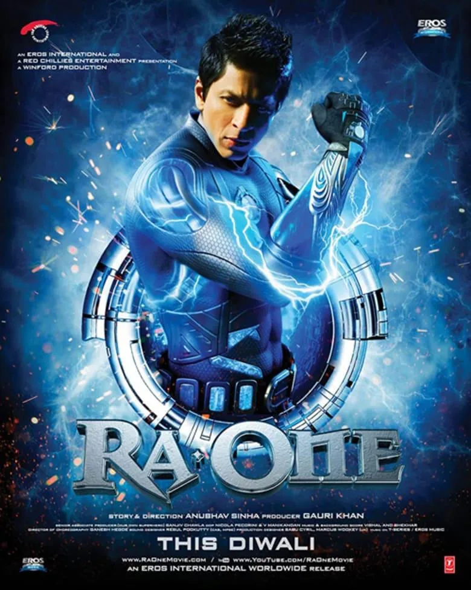
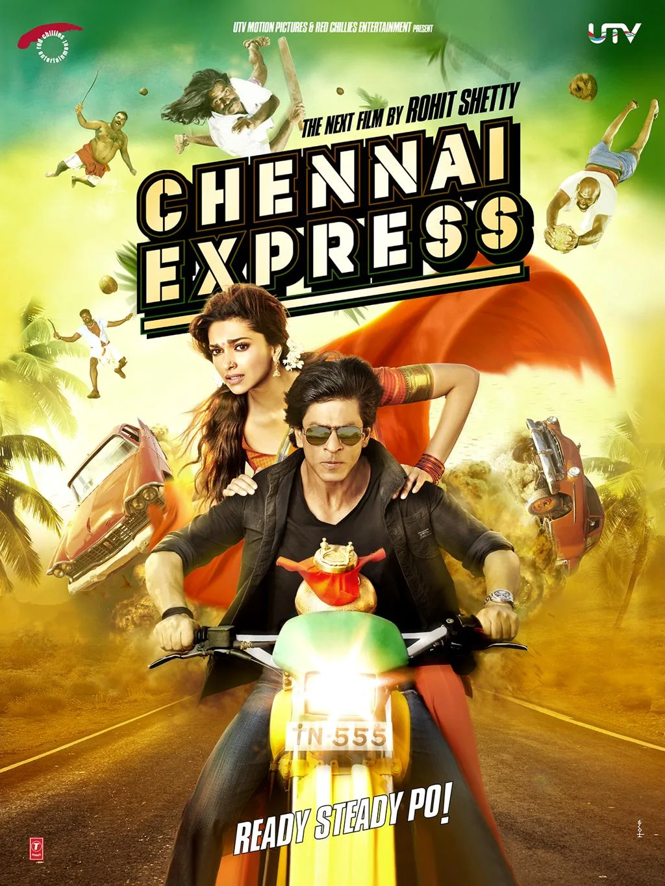
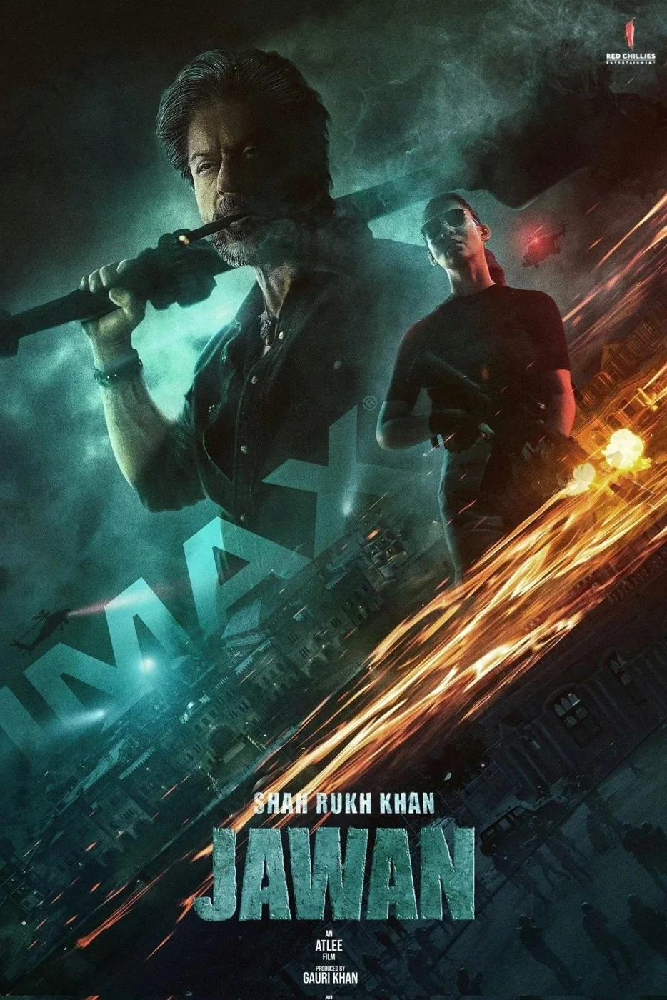

The Final Thesis · section 41 of 92
OFFICIAL FIRST DRAFT
FROM ZERO TO KING
Shah Rukh Khan, the Making of a Digital Empire, the Silence That Changed the Story, and the Royal Flush
A strategic research paper and first-draft cultural business study | Prepared for editorial review, discussion, and publication development | September 2026



4
The central thesis: Shah Rukh Khan's career offers a remarkable lens through which to study the evolution of celebrity marketing from film promotion to digital participation, from participation to global brand power, and from the power of a superstar to the possibilities of an entire fan-powered ecosystem.
This is not simply a study of how a movie star sells movies.
It is a study of how a movie star, his films, his fans, his commercial ventures, and the digital systems surrounding them can become an interconnected cultural economy.
It begins with a question that the advertising industry should have been asking for years:
What happens when the audience stops being the audience and becomes part of the product, the platform, the distribution network, and the story itself?
And it ends with a question that, in September 2026, is becoming increasingly difficult to ignore:
What is Shah Rukh Khan building now?